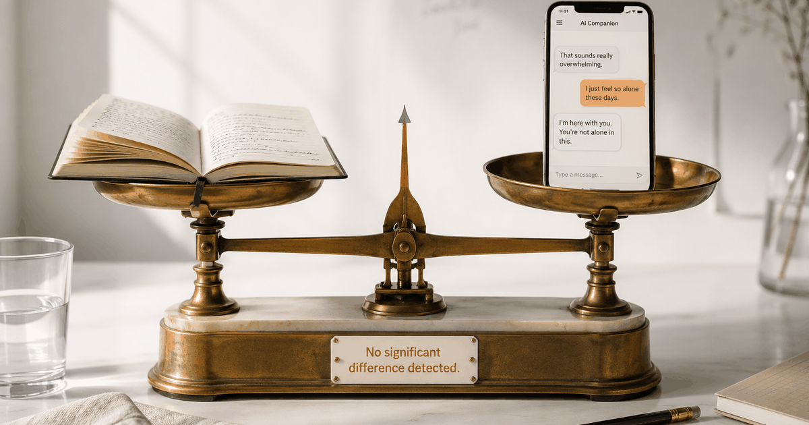

The study, titled "Is a random human peer better than a highly supportive chatbot in reducing loneliness over time?" and published in the Journal of Experimental Social Psychology (2026), was designed to test the exact pitch behind companion apps: an always-available, endlessly patient AI. First-year students were randomly assigned to two weeks of daily text exchanges with a supportive chatbot, with another student, or to solo journaling. It was written up by the APA's Monitor on Psychology in its January/February 2026 issue.
The result cut cleanly through the hype. Only the human-peer group's loneliness dropped by a meaningful, statistically significant amount. The chatbot — despite being built to be warm and supportive — left students no better off than if they'd simply written in a journal. Both did roughly nothing for loneliness over the two weeks.
This lands as companion apps keep growing. Per the APA's reporting, use of AI companions has surged roughly 700% since 2022, and Character.AI alone claims on the order of 20 million monthly users. The pitch is easy to understand: always available, never judgmental, cheaper than a therapy session.
The gap isn't really about the quality of the AI's replies — it's about what loneliness actually is. Loneliness isn't the absence of words. It's the absence of being genuinely witnessed by another person who is also taking a small risk by showing up. A chatbot never takes a risk. It never has a bad day. It never says "I don't know what to say, but I'm here." That asymmetry is likely part of why supportive exchanges with it didn't add up to less loneliness, even when individual messages felt warm.
There's a distinction here that matters for couples, and it's easy to miss. AI that helps two real people connect with each other is a different category from an AI companion designed to substitute for human contact. Using an app to prompt a conversation with your partner is closer to human-interaction scaffolding than to chatbot companionship. This study didn't test that directly — but its core finding, that a real human peer moved the needle where a bot did not, points in the same direction.
What it means for you: The loneliness that can settle in after a baby isn't something a chatbot will resolve — but a five-minute structured check-in with your partner, even awkward, even tired, is a real human interaction. That's the ingredient the research keeps landing on. If you're wondering whether leaning on an app helps or hurts, we dug into whether an AI companion hurts real relationships and what an empathic AI partner can and can't do.
Common questions
Keep readingDoes an AI companion hurt your real relationships? · Where AI actually helps with the hard parts of a relationship · Lonely as a new dad? Why it happens and what helps

Co-founder of Regular. Writes about relationships, parenthood, and the science of how couples stay close after a baby.
About Regular — the relationship app for new dads, built by a small team of parents who needed it themselves. Small, science-backed moves with your partner, not big talks.